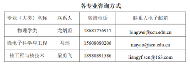

教务处 · 教学通知
四川大学物理学院2024年本科生转专业面试通知
发布时间：2024-04-19
根据教务处《关于开展2024年本科生转专业工作的通知》、《物理学院2024年本科生转专业工作实施方案》，拟组织专家对申请转入本院各专业的学生进行面试考核。请以下同学携带有效证件（学生证/身份证）提前15分钟到场并签到，同时自行打印装订好5份个人材料（含转专业申请表、成绩单等；应与发送到指定邮箱的材料一致）并携带到场，未按时参加面试者视为自动放弃本次转专业申请。具体面试安排如下： 物理学专业 面试时间：4月25日（星期四）上午9:00 地点：望江校区物理学院物理馆220会议室 名单：陈均阳、陈孟川、陈思杞、樊旭、冯卿洋、甘籽涵、郭知渊、何彦霏、黄章粮、金颖、李俊泽、李雨乔、李志江、廖世杰、刘偲雨、卢天涯、陆婧、谯畏、涂程康、万雨宸、韦荣政、张国栋、张斯淇、郑燮、周璟 核工程与核技术专业 面试时间：4月25日（星期四）下午2:00 地点：望江校区核工楼210会议室 名单：白延泽、程健强、程祎豪、黄嘉洋、黄系彧、林翔、任亮、向科帆、胥嘉豪、张冰杰、赵磊、赵汝宗、周审威 微电子科学与工程专业 第一组 面试时间：4月22日（星期一）上午9:00 地点：望江校区物理学院物理馆220会议室 名单：陈思洋、陈逸飞、程远鹏、程忠林、崔孟晨、邓珈忆、堵俊杰、付奕晨、耿君仪、郭雪颜、韩图骁、郝晋辉、何恒懿、黄龙、黄志鹏、黄志翔、蓝路生、李善蒙、李欣宇、林鑫杰、刘恩琦、刘立翔、刘文雅、卢博斐、吕穗婷、潘家睿 第二组 面试时间：4月23日（星期二）上午9:00 地点：望江校区物理学院物理馆220会议室 名单：戚蕊雅、秦梦晗、庆泽毅、沈施延、宋俊熹、宋正鑫、孙楠、覃捷骏、王久铭、韦韩博、吴承航、鲜杰、谢祺、谢元朝、徐浩冉、闫子涵、杨果、杨逸轩、杨意欢、喻言、张菲、张红威、张一梁、周子梁、邹璐 咨询电话：028-85415561，或者专业联系人老师 四川大学物理学院 2024年4月19日
